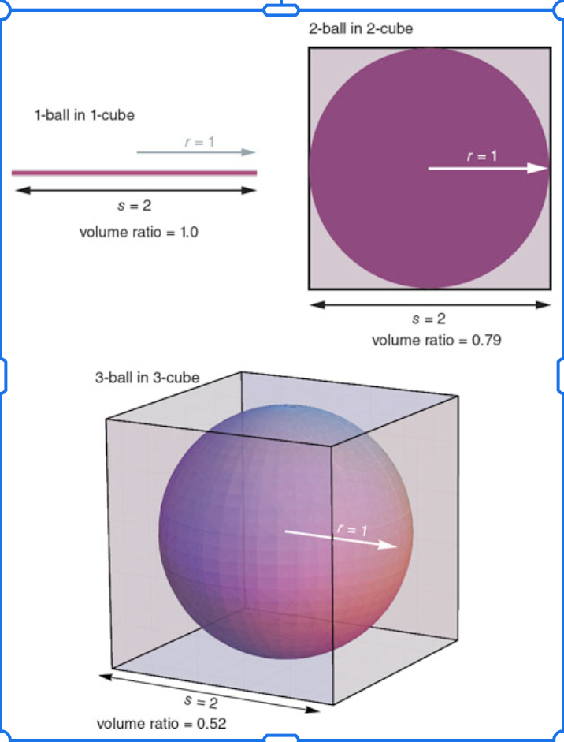

Building valuable Deterministic products in a Probabilistic world
The role of Data Science in Product Development
Dr John Carney · 2026
01
Introduction
👋 I'm John Carney
PhD in Molecular Genetics of Wheat
Co-Founder PyDataMCR
PyData London Conference Chair & Strategic Committee Chair
Founder — Field of Play
Consultant — PDFTA
Some projects
Search ranking for eCommerce
Recommendations models
Building ML Platforms
Insurance pricing systems
High-throughput Cyber security classification systems
I help organisations build data and AI capabilities
Core Message
What we're here to learn
🌊The rise of LLMs is
giving rise to a new class of product — probabilistic products — beyond the deterministic products
and processes we're used to building
⚠️Building successful
probabilistic products is not the same as building deterministic ones — it demands different skills,
different processes, and a different mindset
Principles
The principles we'll explore
🎯To deliver a valuable
product, use as little AI as necessary — and no less
🔬Falsifiability is your
friend
🛠️Follow software
engineering best practices
💡Solve a problem!
Deterministic vs Probabilistic Systems
Deterministic: given the same inputs, you always get the same output — the system's behaviour is
fully determined by its inputs
Probabilistic: given the same inputs, outputs can differ — but the variation isn't random noise; it
can be characterised by a probability distribution
Why this matters: a system's behaviour is only fully understood when you know its output distribution — not just whether a single output was correct
02
Background
What do we mean by deterministic products?
SQL databases — the same query on the same data always returns the same rows
Login / auth flows — given valid credentials, you always get a session token; invalid credentials always fail
Payment flows — cart + payment method → the same order confirmation, every time
How have we built deterministic products?
Techniques and principles
Unit & integration testing — verify specific input/output pairs exhaustively
CI/CD — automated quality gates before every deployment
Versioning — deterministic behaviour tied to a specific, reproducible release
Monitoring & alerting — detect when outputs deviate from expected ranges
Reproducibility — any engineer can run the system and get the same result
Where deterministic techniques fall short
You can't enumerate all possible outputs — the test oracle problem
Unit test passes are a single sample from a distribution
A single failing test tells you an output was wrong — not why or how often
"Works on my machine" loses meaning when outputs are sampled from a distribution
Two categories of probabilistic products
🔒Deterministic
interface: uses a probabilistic component internally, but exposes a consistent, well-typed output to
callers — the probabilism is hidden behind a structured contract
🎲Probabilistic
interface: outputs are inherently variable and exposed as such — users receive different results on
different runs, and the product is designed around that variability
How an LLM generates a response
P(next token | context) → sample → repeat until stop
Each token is sampled from a probability distribution over the vocabulary
LLMs are Bayesian in expectation — not in any single realisation
Measuring distance from a point gets increasingly difficult as dimensions increase
LLMs operate in extremely high-dimensional space — making it very hard to evaluate how close any output is to the ideal
We can't validate every possible output — the space is effectively infinite
Every constraint is a dimensionality reduction — structured outputs, typed fields, and domain validators shrink the space to something observable and testable

Always check the observed output distribution
Without constraints on outputs, we have no visibility into what the output distribution looks like
Unlike software code, data distributions can change faster than code — a model update, an input shift, or a
change in user behaviour can alter outputs without a single line of code changing
Schema drift — the structure of the data changes: new fields, missing fields, type changes
Distribution drift — statistical properties shift: min, max, shape (normal vs power law), mean,
standard deviation, tail behaviour
Validate as quickly as possible
Short feedback loops
Validating early is a core software engineering principle — catch failures fast, fix them cheaply
Applied to probabilistic outputs: validate the result before it reaches downstream systems or users
The longer a bad output travels through a system undetected, the more expensive the failure
Constrain the output at the point of generation — don't defer validation to the consumer
Systematic evaluation
Ad-hoc checks are not enough — probabilistic systems require systematic, automated evaluation
Evaluation criteria should be derived from observed failure modes, not invented upfront
Test against both observed data (real production inputs) and artificial data (generated to cover known edge
cases)
Criteria must be actively maintained — as new failure modes emerge, the evaluation set must grow to reflect
them
04
Techniques
Structured outputs
A response that conforms to a defined schema — constrains the output space
Makes the output distribution observable and evaluable
In Python: define the schema with Pydantic, wire into agents with PydanticAI
Write time is the earliest possible moment to intercept a bad output — the tighter the feedback loop, the
cheaper the failure
Two layers: schema validation (correct fields, correct types) and constraint validation
(domain rules per field)
e.g. products_purchased — validate it is an integer, that it is ≥ 0, and (in an ecommerce
context) that it is < 100
Pydantic enforces both layers at instantiation — the object either conforms or raises immediately
from pydantic importBaseModelfrom typing import Annotated
from annotated_types importGe, LtclassOrder(BaseModel):
products_purchased: Annotated[int, Ge(0), Lt(100)]
Automated evaluation infrastructure
Fully automated evaluation is not trivial — it requires purpose-built infrastructure
Capture observed outputs and the inputs that generated them at the point of generation (streamed capture)
Store evaluation criteria in a database — queryable, versioned, and maintainable as new failure modes are identified
Run deterministic classifiers against each output–criteria pair to produce a pass/fail decision
05
Examples
Example 1 — Healthcare Startup
Deterministic outputs from a probabilistic system
Greenfield MVP — AI analyses patient form data, applies RAG, exposes results to the main API
The LLM is probabilistic internally; the product surface is deterministic — callers always receive
a well-typed, validated object
⚠️ Does not perform diagnosis or provide medical advice
classPatient(BaseModel):
name: str
about_you: AboutYou# nested model with Field descriptions as prompts
age: int
condition_id: str
Example 2 — Validation on write
Short feedback loops in practice
A real model combines both layers across every field — type constraints for structure, custom validators for domain logic
If an LLM generates an OrderItem that fails any check, Pydantic raises immediately — before the data can propagate
VALID_CATEGORIES = {"electronics", "clothing", "food"}
defvalid_category(v: str) -> str:
if v not inVALID_CATEGORIES:
raiseValueError(f"Unknown category: {v}")
return v
classOrderItem(BaseModel):
quantity: Annotated[int, Ge(1), Lt(100)]
unit_price: Annotated[float, Ge(0.01)]
category: Annotated[str, AfterValidator(valid_category)]
Example 3 — Large Corporate eCommerce
Error analysis in practice
Context
Translating DML into ANSI SQL — migrating an ETL pipeline powering 10,000s of tables
Small team, high volume, low tolerance for silent failure
Evaluation layers
Validator — automated structural checks
Deterministic criteria — valid SQL? contains CREATE? compiles in dbt?
Expert review — human-in-the-loop for edge cases
Error analysis — classifying failure modes to drive iteration
Run ID
Valid SQL?
Contains CREATE?
Compiles in dbt?
5cbddf9c-cf64-44a5-a56b
True
False
False
7139c6bf-88a9-4ff4-a2bb
True
True
False
56a1cf71-401d-4fab-8961
False
False
False
06
Conclusions
Take this with you
Core Message
🌊The rise of LLMs is
giving rise to a new class of product — probabilistic products — beyond the deterministic products
and processes we're used to building
⚠️Building successful
probabilistic products is not the same as building deterministic ones — it demands different skills,
different processes, and a different mindset
🎯To deliver a valuable
product, use as little AI as necessary — and no less
🔬Falsifiability is your
friend
🛠️Follow software
engineering best practices
💡Solve a problem!
PyData · PDFTA
Thank you
Questions?
Dr John Carney · john@pdfta.com
Coming up
PyData London 2026
June 5–7, 2026 · Convene Sancroft, St. Paul's
Three days of talks, tutorials, and community for data scientists, engineers, and tool builders.